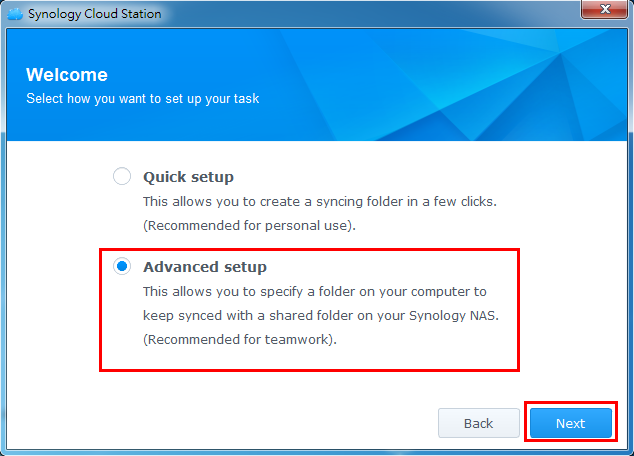
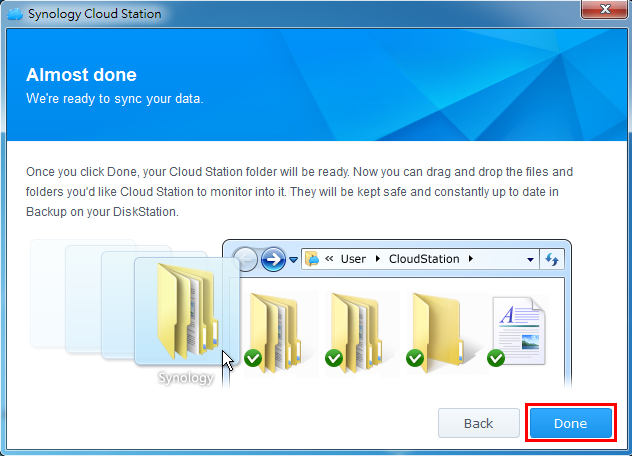
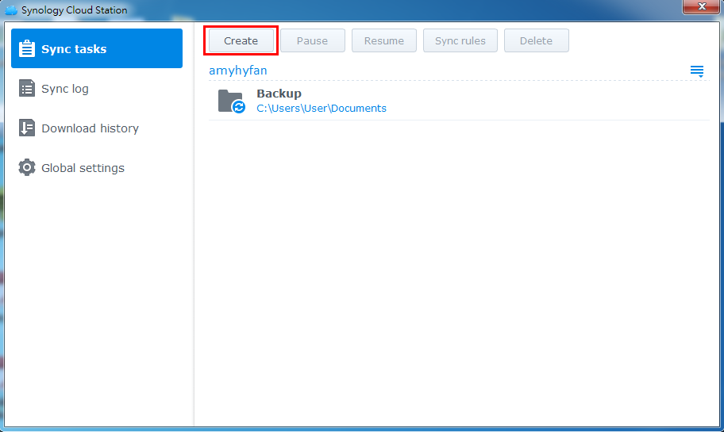
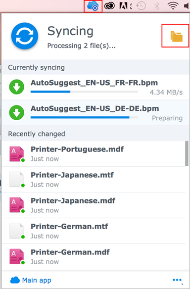

개요
Cloud Station은 정교한 크로스 플랫폼 동기화 소프트웨어일 뿐 아니라, 사용자들은 개인 컴퓨터를 더 스마트하게 백업하는 수단으로서 이것을 사용할 수 있습니다. Cloud Station을 백업 동반자로 이용할 경우 다음과 같은 몇 가지 이점이 있습니다. 우선, 실시간 복제는 보다 나은 RPO를 제공하므로 큰 사고 시 PC에서 더 짧은 기간의 데이터가 손실(복구 불가)됩니다. 이는 즉각적일 뿐 아니라, 특정 시간에 많은 양의 대역폭을 소모하는 전통적인 백업과 비교할 때 대역폭을 획기적으로 절약할 수 있습니다. PC 클라이언트에서 파일 크기 또는 파일 유형을 설정함으로써 백업을 원치 않는 동일한 폴더 내에 있는 파일을 쉽게 제외시킬 수 있습니다. Cloud Station은 또한 단일 파일에 대해 최대 32개의 기록 버전을 보유할 수 있는데, 이는 Cloud Station이 서버(NAS) 측에서 PC 클라이언트로 복원을 허용하는 숫자입니다.
1. eCore Server에서 Cloud Station 설정
- Administrators에 속하는 계정으로 DSM에 로그인합니다.
- Cloud Station을 실행합니다.
- 사용자 홈 기능을 활성화하지 않은 경우, 이를 활성화하라는 메시지가 나타납니다. 확인을 클릭합니다.
- 사용자 설정 페이지가 나타납니다. 사용자 홈을 활성화하고 적용을 클릭합니다.
- 이제 Cloud Station으로 되돌아오고 이를 활성화하라는 메시지가 표시됩니다. 예를 클릭합니다.
- 권한으로 가서 Cloud Station 서비스를 이용할 수 있는 사용자를 지정합니다. 저장을 클릭하십시오.
- eCore Server에 백업 목적의 공유 폴더를 설정합니다. 이렇게 하려면 제어판 > 공유 폴더로 이동하여 생성을 클릭합니다.
- 폴더 이름을 지정하고 그에 따라 상세 정보를 채웁니다. 확인을 클릭합니다. 예를 들면, 폴더 이름을 백업으로 지정합니다.
- 권한 탭에서, 폴더에 액세스할 수 있는 사용자를 지정합니다. 예를 들면, admin에게 폴더에 대한 읽기/쓰기 권한을 부여합니다. 확인을 클릭합니다.
- Cloud Station > 설정 > 공유로 가서 백업 폴더를 선택하고 활성화를 클릭합니다.


참고: QuickConnect는 로컬 네트워크 외부에서 쉽게 eCore Server에 연결할 수 있도록 해주는 릴레이 서비스입니다. 집이나 사무실에서 멀리 떨어진 곳에 있을 때 파일을 동기화하기를 원하는 경우, 제어판 > QuickConnect로 가서 QuickConnect를 활성화할 것을 권장합니다.


2. Windows PC에서 Cloud Station 설정
PC 또는 Mac에서 Cloud Station을 설정하는 단계를 따릅니다
2.1 PC의 경우
- Cloud Station > 개요로 가서 다운로드 단추를 클릭합니다.
- Windows PC에 맞는 Cloud Station을 다운로드하는 단추를 클릭합니다. (Synology 다운로드 센터에서도 Cloud Station을 다운로드할 수 있습니다.)
- 컴퓨터에서 설치 관리자를 실행하고 지침을 따라 Cloud Station을 설치합니다.
- 설치를 마친 후 컴퓨터에서 Cloud Station을 실행합니다. 지금 시작을 클릭합니다.
- Cloud Station을 실행 중인 eCore Server의 주소(또는 QuickConnect ID), 사용자 이름 및 패스워드를 입력합니다. (오른쪽에서 검색 아이콘을 클릭하여 Cloud Station이 LAN 내에서 다른 eCore Server를 자동으로 검색할 수도 있습니다.) 다음을 클릭합니다.
- 작업을 설정하려는 방법을 선택합니다(여기서에서는 특별히 백업을 위해 폴더를 설정하는 중이므로 빠른 설정을 선택할 것입니다). 다음을 클릭합니다. 
- 앞에서 eCore Server에 생성한 백업 폴더와 동기화를 유지할 폴더를 컴퓨터에서 선택합니다. 다음을 클릭합니다.
- 완료를 클릭하여 설정을 완료합니다. 


참고: 입력한 계정은 eCore Server의 Cloud Station > 권한에서 부여되는 권한을 가지고 있어야 합니다.

다른 작업 생성하기:
- Cloud Station > 설정으로 가서 이 새 작업을 위한 공유 폴더를 활성화합니다. 여기서 사용한 예는 사진입니다. 사진에 대해 읽기/쓰기 권한을 가지고 있는지 확인합니다.
- PC의 Cloud Station으로 돌아가서 생성을 클릭합니다. 
- 새 작업을 위한 eCore Server를 선택합니다. 여기에서는 동일한 eCore Server를 위한 또다른 작업을 생성하는 것이므로 연결된 eCore Server를 선택할 것입니다. 다음을 클릭합니다.
- 고급 설정을 클릭하고 마법사의 나머지 단계에 따라 설정을 계속합니다.


2.2 Mac의 경우
- Cloud Station > 개요로 가서 다운로드 단추를 클릭합니다.
- Mac에 맞는 Cloud Station을 다운로드하는 단추를 클릭합니다. (Synology 다운로드 센터에서도 Cloud Station을 다운로드할 수 있습니다.)
- 컴퓨터에서 설치 관리자를 실행하고 지침을 따라 Cloud Station을 설치합니다.
- 설치를 마친 후 컴퓨터에서 Cloud Station을 실행합니다. 지금 시작을 클릭합니다.
- Cloud Station을 실행 중인 eCore Server의 주소(또는 QuickConnect ID), 사용자 이름 및 패스워드를 입력합니다. (오른쪽에서 검색 아이콘을 클릭하여 Cloud Station이 LAN 내에서 다른 eCore Server를 자동으로 검색할 수도 있습니다.) 다음을 클릭합니다.
- 작업을 설정하려는 방법을 선택합니다(여기서에서는 특별히 백업을 위해 폴더를 설정하는 중이므로 빠른 설정을 선택할 것입니다). 다음을 클릭합니다.
- 앞에서 eCore Server에 생성한 백업 폴더와 동기화를 유지할 폴더를 컴퓨터에서 선택합니다. 다음을 클릭합니다.
- 완료를 클릭하여 설정을 완료합니다.


참고: 입력한 계정은 eCore Server의 Cloud Station > 권한에서 부여되는 권한을 가지고 있어야 합니다.


새 작업 생성하기:
- Cloud Station > 설정으로 가서 이 새 작업을 위한 공유 폴더를 활성화합니다. 여기서 사용한 예는 사진입니다. 사진에 대해 읽기/쓰기 권한을 가지고 있는지 확인합니다.
- 컴퓨터의 Cloud Station으로 돌아가서 생성을 클릭합니다.
- 새 작업을 위한 eCore Server를 선택합니다. 여기에서는 동일한 eCore Server를 위한 또다른 작업을 생성하는 것이므로 연결된 eCore Server를 선택할 것입니다. 다음을 클릭합니다.
- 고급 설정을 클릭하고 마법사의 나머지 단계에 따라 설정을 계속합니다.


3. Cloud Station에서 데이터 검색
우연히 파일을 제거하거나 덮어쓴 경우, Cloud Station은 이를 쉽게 되찾을 수 있도록 허용합니다.
4.1 PC에서 동기화된 파일의 이전 버전 다운로드하기
- 시스템 트레이에서 Cloud Station 아이콘을 클릭하고 폴더 아이콘을 클릭합니다.
- 선택된 파일을 마우스 오른쪽 단추로 클릭하고 Synology Cloud Station > 이전 버전 찾아보기를 선택합니다.
- 다운로드하려는 버전을 찾아 다운로드 아이콘을 클릭합니다.
- 파일 이름을 입력하고 파일을 저장할 대상을 선택합니다.


4.1 Mac에서 동기화된 파일의 이전 버전 다운로드하기
- 시스템 트레이에서 Cloud Station 아이콘을 클릭하고 폴더 아이콘을 클릭합니다. 
- 선택된 파일을 마우스 오른쪽 단추로 클릭하고 Synology Cloud Station > 이전 버전 찾아보기를 선택합니다.
- 다운로드하려는 버전을 찾아 다운로드 아이콘을 클릭합니다.
- 파일 이름을 입력하고 파일을 저장할 대상을 선택합니다.


4.3 Cloud Station에서 동기화된 파일의 이전 버전 다운로드 또는 복원하기
- Cloud Station > 버전 기록으로 가서 이전에 만든 백업 폴더를 선택합니다.
- 검색할 파일을 클릭하고 작업 > 이전 버전 찾아보기를 클릭합니다.
- 다운로드할 파일의 버전을 선택하고 다운로드를 클릭합니다. 또는, 선택한 버전을 복원하려는 것이 확실한 경우, 복원을 클릭하면 현재 버전을 덮어씁니다.


4. 중요한 참고 사항
- 실수로 파일이 제거되거나 덮어쓰는 경우에 대비하여 항상 과거 버전을 유지하십시오.
- 전역 설정에서는 PC에서 파일을 삭제할 때 해당 파일을 NAS에서 다시 가져올지 아니면 NAS에서 삭제할지 여부를 구성할 수 있습니다.
5. 데이터를 추가로 보호
데이터 보호 및 백업에 대한 자세한 내용은 여기를 클릭하여 DSM에서 제공되는 다른 백업 서비스에 관해 상세히 다룬 자습서를 참조하십시오.